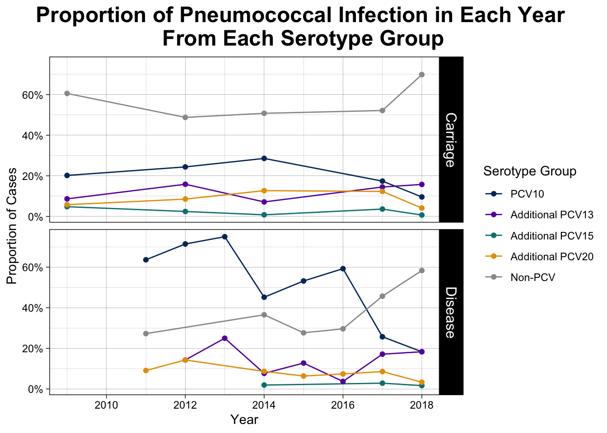

We wanted to look at carriage and disease trends over time on data from the Global Pneumococcal Sequencing Project (GPS). We fit the data using a negative binomial regression (as we have over-dispersed count data), and filtered out cases from untypable serotypes. We noticed that 2014 had way more reported cases than any other year, hypothesizing that this was because surveillance efforts increased in the year before the vaccine intervention. The wide error bars on the disease data led us to only focus on carriage cases in our final time series model.
The trendlines show an increase in cases over time, even after the vaccine intervention. We believe this may be due to increase surveillance efforts, and may not reflect actual case trends in Nepal over time. Inconsistencies in data reporting prompted us to look at cases over time by their serotype to analyze serotype-specific trends. We used data from Kandasamy et al.’s 2024 carriage study to create the following plot. We see that cases caused by PCV10 serotypes have decreased over time, but cases caused by “Other” serotypes (non-PCV) have remained relatively high.
# preparing data for plottingnepal_plot_data <- nepal %>%# select serotype + year columns dplyr::select(Serotype, X2014n, X2015n, X2017n, X2018n, X2019n, X2021n) %>%# format data framepivot_longer(cols =-Serotype,names_to ="Year",values_to ="Count") %>%# remove X and n from the year countsmutate(Year =gsub("X|n", "", Year)) %>%# filter out pcv10serotypes & the total rowsfilter((!Serotype %in% pcv10_serotypes) & (!Serotype=="Total"))# plot serotype trends over timeggplot(data = nepal_plot_data, aes(x =as.numeric(Year), y = Count, color = Serotype)) +geom_line() +theme_bw() +labs(x ="Year", y ="Count", title ="Pneumococcal Infection Counts")
We then wanted to look at the serotypes from the PCV10 vaccine individually. This scale allows us to analyze these trends more closely, and better illustrates the decrease in case counts:
# getting data ready for plottingnepal_plot_data_PCV10 <- nepal %>%# select serotype + year columns dplyr::select(Serotype, X2014n, X2015n, X2017n, X2018n, X2019n, X2021n) %>%# format data framepivot_longer(cols =-Serotype,names_to ="Year",values_to ="Count") %>%# remove X and n from the year countsmutate(Year =gsub("X|n", "", Year)) %>%# filter out pcv10serotypes & the total rowsfilter((Serotype %in% pcv10_serotypes) & (!Serotype=="Total"))# plot serotype trends over timeggplot(data = nepal_plot_data_PCV10, aes(x =as.numeric(Year), y = Count, color = Serotype)) +geom_line() +theme_bw() +labs(x ="Year", y ="Count", title ="PCV10 Pneumococcal Carriage Cases")
We see the PCV10 cases are decreasing. We next looked at the serotype-specific data by proportions rather than counts (the proportion of total cases caused by each serotype). All listed serotypes here are included in other PCV vaccines: the 13, 15, and 20-valent PCVs. PCV10 serotypes are all grouped together. We included “Other” (non-PCV) serotypes here as well. This plot shows a clear increase in the proportion of detected cases attributed to non-PCV serotypes.
# getting data ready for plottingnepal_plot_data_prop <- nepal %>%# select serotype + year columns dplyr::select(Serotype, X2014p, X2015p, X2017p, X2018p, X2019p, X2021p) %>%# format data framepivot_longer(cols =-Serotype,names_to ="Year",values_to ="Proportion") %>%# remove X and n from the yearsmutate(Year =gsub("X|p", "", Year)) %>%# filter out pcv10serotypes & the total rowsfilter((!Serotype %in% pcv10_serotypes) & (!Serotype=="Total"))# plot serotype trends over timeggplot(data = nepal_plot_data_prop, aes(x =as.numeric(Year), y = Proportion, color = Serotype)) +geom_line() +theme_bw() +labs(x ="Year", y ="Proportion", title ="Pneumococcal Infection \nProportions by Serotype Over Time")
This trend is very interesting, but Kandasamy et al.’s paper only looks at carriage cases. This led us to look back at the GPS dataset, has disease data as well, so we decided to compare the serotype-specific trends for both carriage and disease manifestations. We grouped the serotypes from this dataset based on which vaccine-targeted group they belonged to (PCV10, additional PCV13, PCV15, PCV20; and non-PCV). We can see different trends for both carriage and disease manifestations, but in both we see that the greatest proportion of cases in recent years can be attributed to non-PCV serotypes.
serotypes_all <-unique(nepal_gps$In_silico_serotype)non_vaccine_serotypes <-setdiff(serotypes_all, pcv10_serotypes)non_vaccine_serotypes <- non_vaccine_serotypes[!non_vaccine_serotypes %in%c("ALTERNATIVE_ALIB_NT","COVERAGE TOO LOW", "SWISS_NT", "UNTYPABLE")]# Shorten and classifynepal_shortened <- nepal_gps[, c("Year", "Clinical_manifestation", "In_silico_serotype")]nepal_shortened$Serotype_group <-ifelse( nepal_shortened$In_silico_serotype %in% pcv10_serotypes, "PCV10",ifelse(nepal_shortened$In_silico_serotype %in% pcv13_serotypes, "PCV13",ifelse(nepal_shortened$In_silico_serotype %in% pcv15_serotypes, "PCV15",ifelse(nepal_shortened$In_silico_serotype %in% pcv20_serotypes, "PCV20", "Other"))))# Assign Disease vs Carriagenepal_shortened <- nepal_shortened %>%filter(Year >=2009) %>%mutate(Disease_Status =ifelse(Clinical_manifestation =="CARRIAGE", "Carriage", "Disease"))# Count datanepal_serotype_counts <- nepal_shortened %>%group_by(Year, Disease_Status, Serotype_group) %>%summarise(count =n(), .groups ="drop")# Proportion data (within each year and disease status)nepal_serotype_props <- nepal_serotype_counts %>%group_by(Year, Disease_Status) %>%mutate(prop = count /sum(count)) %>%ungroup()# Define custom color palettecustom_colors <-c("PCV10"="#00356B", # Yale Blue"Additional PCV13"="#6A0DAD", # Purple"Additional PCV15"="#008080", # Teal"Additional PCV20"="#E69F00", # Gold"Non-PCV"="#999999"# Grey fallback)nepal_serotype_props <- nepal_serotype_props %>%mutate(Serotype_group = dplyr::recode(Serotype_group,"PCV10"="PCV10","PCV13"="Additional PCV13","PCV15"="Additional PCV15","PCV20"="Additional PCV20","Other"="Non-PCV" ),Serotype_group =factor(Serotype_group, levels =c("PCV10","Additional PCV13","Additional PCV15","Additional PCV20","Non-PCV" )) )# === New proportion plot ===ggplot(nepal_serotype_props, aes(x = Year, y = prop, color = Serotype_group)) +geom_line() +geom_point() +facet_grid(Disease_Status ~ .) +scale_color_manual(values = custom_colors) +scale_y_continuous(labels = scales::percent_format(accuracy =1)) +labs(title ="Proportion of Pneumococcal Infection in Each Year \nFrom Each Serotype Group",y ="Proportion of Cases",x ="Year",color ="Serotype Group" ) +theme_linedraw() +theme(plot.title =element_text(face ="bold", size =18, hjust =0.5),plot.title.position ="plot", # ← ensures hjust is applied to full plotstrip.text =element_text(size =12),axis.title =element_text(size =11) ) -> propsprops

ggsave("Serotype_Proportions_EDA_Plot.png", plot=props, width=8, height=7, units ="in")
We again looked at PCV10 serotypes specifically, but now looked at the change in the percentage of cases attributed to these serotypes from the Pre- to Post-PCV10 period. We looked at just carriage cases here because we wanted to include this image on our poster-since both time series & hierarchical modeling were only able to look at carriage cases, we limited this analysis to only these cases as well. We merged the GPS and Kandasamy datasets. Since we’re looking at serotype-specific trends and the method for data collection is not likely influenced by which serotype is being carried, we believe this to be valid and helpful as we have limited data.